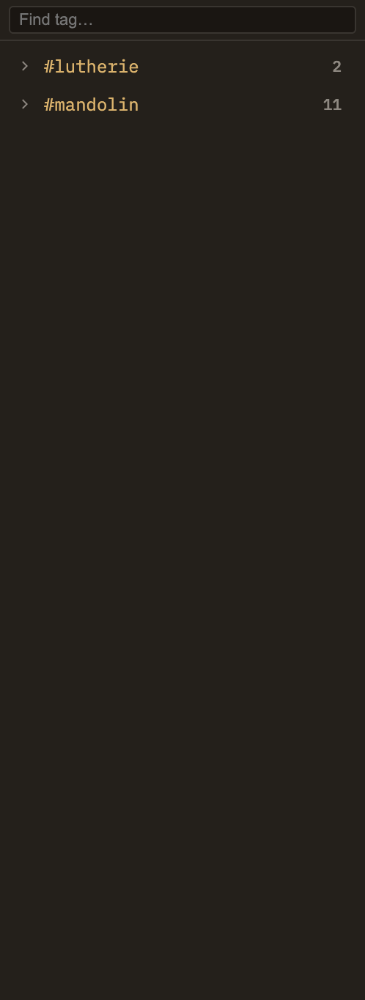

Docs/Right sidebar/Tags
Tags
Tags are short labels you add to a note to group it with others on the same theme. This panel in the right sidebar shows the tags on the note you're currently reading, arranged as a tidy tree so a tag like #project/minerva/docs reads as nested rows instead of one long string. It's a read-only view — to change a note's tags, you edit the note.
Minerva has a Tags panel on each side, and they answer different questions. The one in the left sidebar is a project-wide list of every tag you've used anywhere, alphabetical and with counts — good for browsing your whole vocabulary and jumping to any tagged note. This one, in the right sidebar, is about the note in front of you: it lists only the tags that note carries. Switch to another note and its contents change to match.
Reading the tree
Tags with slashes in them — #area/health, #project/minerva/docs — read as paths, and the panel nests them accordingly. If a note carries only #foo/bar/baz, you'll still see foo and foo/bar as parent rows above it, standing in as the branches that hold the tree together.
#area/health no matter how specific the tag goes. Handy for a broad sweep across a whole theme.
Adding and removing tags
This panel only reads — there's no box to type into. You tag a note by editing the note itself, and Minerva recognizes tags written two ways; the panel shows both together.
#tagname anywhere in the note's text. It's picked up as a tag as soon as you save.tags: list in the note's properties at the top. Many notes are tagged only this way, with nothing typed inline.The tree updates the moment you save — no manual refresh needed. For browsing tags across your whole project, see Left sidebar → Tags.